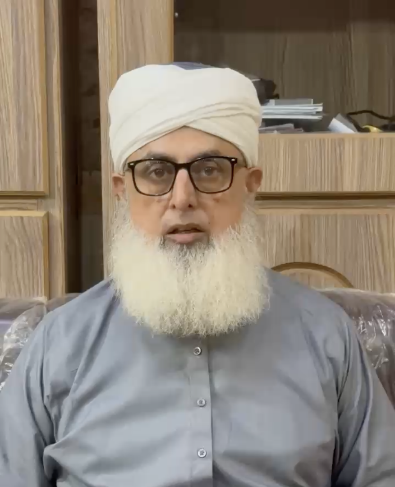

✦ Hajj 2026 — Dedicated Guidance
Hajj 2026 Questions & Answers
A practical resource for pilgrims — concise answers on key rites, preparation steps, and common concerns to help you perform Hajj with clarity and confidence. New questions added regularly.
🕌 This guidance series is presented under Mufti Muhammad Tahir Masood.

Structured Learning
The Seven Key Rites of Hajj
📋
Content in progress. New questions and answers are being added regularly. Bookmark this page and check back soon.
Hajj Questions and Answers
Practical Guidance for Pilgrims
This page is for first-time and returning pilgrims who need concise, practical steps before travel and during rites. It is especially useful for families and group leaders who need a clear checklist-style overview.
Prepare travel documents, vaccination records, Ihram essentials, medicine, emergency contacts, and a small dua notebook. Also learn the sequence of rites in advance so you can focus on worship instead of confusion.
Protect the sanctity of Ihram, understand the timing and significance of Arafat, keep clarity on Tawaf and Sa'i sequence, and perform Mina and Jamarat with calm discipline. Avoid rush and maintain order with your group.
Walk with your assigned group, keep hydration and identification with you, move in non-peak windows where possible, and prioritize safety over speed. A steady pace with patience is usually better than rushed movement.
Plan mobility support early, keep medication timing clear, carry lightweight essentials only, and coordinate your route and meeting points with group supervisors. Comfort planning in advance improves worship quality during the journey.
No. This page is educational guidance. Personal, complex, or exceptional rulings should always be taken directly from a qualified scholar according to your specific circumstances.
Important: This page is designed to guide preparation and understanding for Hajj 2026. For personal rulings, emergencies, or complex fiqh matters, consult a qualified scholar directly before and during travel.